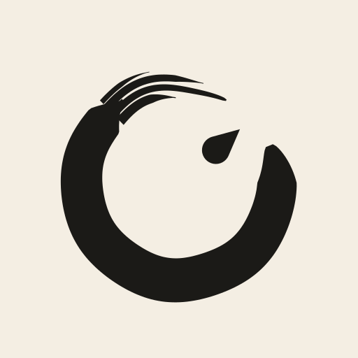
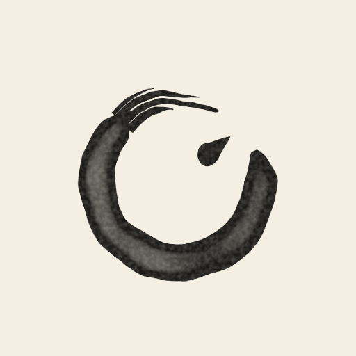
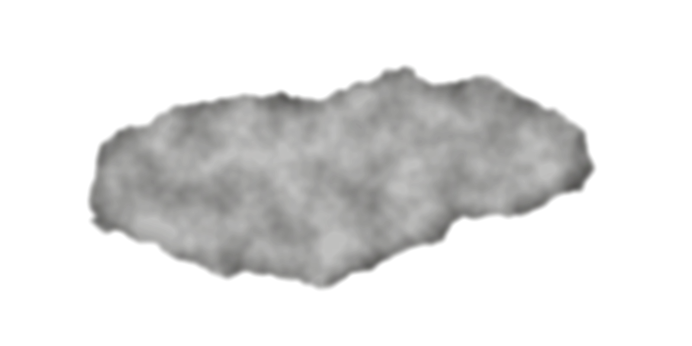

OmniLaya Search
Brand kit. Cream paper, black ink, one watercolor wash.
Mark


An open ring painted in one brush stroke, with an ink drop inside. The ring is the whole web (omni); the drop is the one point where Laya decides. Use the watercolor mark at 48px and up, the flat mark below that. Keep clear space of half the mark's width on every side.
Lockup
Colour
Page background
Search box, chosen chips
Text, mark, primary button
Secondary text, 4.8:1 on paper
Dashed separators, borders
Dark theme background
Dark theme text and mark
Result links only, before and after a visit
The brand has no hue of its own. Blue and purple exist only so people recognise result links, and red only for errors (#B3261E). Never use a link colour for a brand element.
Type
Display. The wordmark and the home headline only. Weight 500, italic 400 for "Search". Soft axis at 50.
Interface and reading. Everything a person operates or reads: box, chips, results, footer. 400 and 500.
Laya's readouts only: percentages, checkpoint, the query sent, "Laya chose". Never decoration.
Interface voice

One watercolor bloom behind the home search box, at 9% opacity (7% at night, inverted). Nowhere else. Texture belongs to the mark and this wash; everything behind text stays flat.
Rules
- Say what Laya did, in plain words: "Laya chose", "read by laya/english", "63% on topic".
- Solid borders mark what is chosen; dashed borders mark what is available.
- Motion is feedback: the enso draws while waiting, rows fade in, meters fill. Nothing moves for decoration.
- Links stay blue and purple. Everything else is ink.
- No brand colour, gradient or glow. No pink: that is Jev Search.
- No watercolor texture behind text or inside controls.
- No mono type as decoration; it is Laya's voice only.
- No buzzwords or em dashes in copy. Short sentences, simple English.